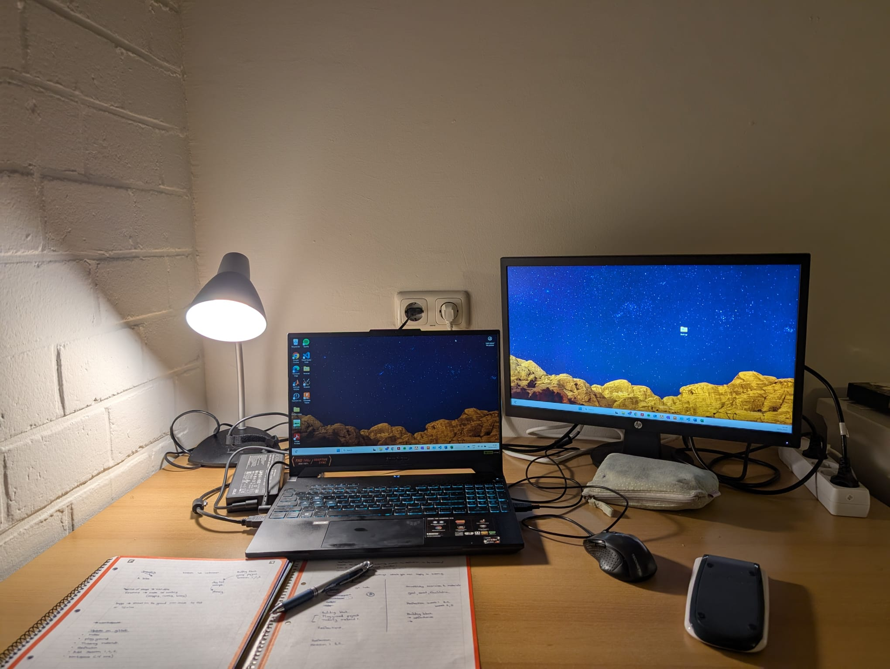

Building block project
I recently moved to the Netherlands from Botswana. So my workspace is largely different to my workspace in Botswana. It is a simplistic set up with my trusted monitor and lamp on a big broad desk. The five things on my desk are my monitor, my laptop, a notepad, my pencil-case and my calculator
My favourite tinkerable domain is screen printing and stencil making.This is becuase my best childhood friend made me fall in love with art and the different techniques used. She left to go to Cape Town when we were in highschool and I wanted to give her an 'artistic' gift that I made. I adored a portrait of a cartoon portrait that she drew of a woman with an eyepatch and studded necklace. I wanted to copy it (since imitation is the best form of flattery) onto a piece of cloth so she could hang it up like a tapestry in her new home. I had no idea where to start. My art teacher suggested I cut out a stencil and I could put a screen and paint over it so it 'prints' the desired image onto the cloth. The picture of my first project for screen printing can be seen at Screen Print Project. Ever since then I have explored other makeshift ways of doing other projects that involved stenciling. A more advanced project that I did was making a customized stenciled t-shirt for my art teacher as a parting gift.

My wish list is to explore more of electronics and try to combine them with art. There is so much to learn from electronics such as applied coding and how things fit together. Despite me being having lots of coding experience in Python, Java and recently C++ and HTML. I am fairly inexperienced when it comes to electronics. I got myself an arduino kit so I could teach myself.
Building block project
Playground project